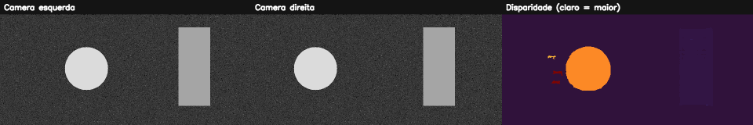

15. Visão 3D, geometria epipolar e estéreo¶
O que você aprenderá¶
Neste capítulo, você aprenderá como duas câmeras podem recuperar informação de profundidade a partir da diferença de posição aparente de um mesmo ponto. O objetivo é compreender a geometria antes de simplesmente gerar um mapa colorido.
Ao final, deverá conseguir:
- explicar por que uma câmera monocular perde profundidade na projeção;
- compreender baseline e disparidade;
- relacionar disparidade e profundidade;
- compreender parâmetros intrínsecos e extrínsecos em alto nível;
- explicar geometria epipolar;
- compreender a finalidade da retificação;
- interpretar busca estéreo como problema de correspondência;
- compreender limitações em regiões sem textura;
- configurar parâmetros principais de StereoSGBM;
- converter a saída fixa para pixels de disparidade;
- distinguir visualização normalizada de valor métrico;
- calcular profundidade usando
Z=fB/d; - compreender propagação de erro;
- reconhecer oclusões e correspondências inválidas.
A visão estéreo é um problema clássico de geometria de múltiplas vistas: duas projeções do mesmo ponto permitem triangulação quando a geometria das câmeras é conhecida (SZELISKI, 2022).
15.1 O que uma câmera perde?¶
Uma câmera projeta pontos 3D em uma imagem 2D.
Um ponto:
vira algo como:
A coordenada de profundidade não aparece diretamente como um eixo da imagem.
Analogia: sombra¶
Uma sombra no chão preserva parte da forma, mas perde informação sobre a distância do objeto ao plano de projeção.
15.2 Dois olhos fornecem uma nova pista¶
Feche um olho e observe seu dedo. Depois troque de olho.
O dedo parece mudar de posição em relação ao fundo.
Objetos próximos apresentam deslocamento aparente maior que objetos distantes.
Essa diferença é a base intuitiva da disparidade.
15.3 Baseline¶
Baseline B é a distância entre os centros ópticos das duas câmeras.
Ele precisa ser conhecido em unidade física se quisermos obter profundidade física.
15.4 Disparidade¶
Após retificação ideal, um ponto aparece aproximadamente na mesma linha das duas imagens, mas em colunas diferentes.
Então:
Objetos mais próximos tendem a gerar maior disparidade.
15.5 Relação de profundidade¶
Para um par estéreo retificado:
em que:
Z: profundidade;f: distância focal em pixels;B: baseline em metros, centímetros etc.;d: disparidade em pixels.
As unidades precisam ser coerentes.
15.6 Exemplo numérico¶
Suponha:
Então:
Se a disparidade cair pela metade, a profundidade dobra.
15.7 Relação inversa¶
A relação entre Z e d não é linear.
Quando d → 0, Z cresce muito e a estimativa se torna extremamente sensível a pequenos erros.
Analogia: triangulação com linhas quase paralelas¶
Quando duas linhas se cruzam com ângulo muito pequeno, uma pequena mudança de direção desloca muito o ponto de encontro.
15.8 Calibração¶
Para profundidade métrica, precisamos conhecer a geometria das câmeras.
Intrínsecos¶
Relacionados à câmera individual:
- focal;
- centro principal;
- distorção da lente.
Extrínsecos¶
Relacionam uma câmera à outra:
- rotação;
- translação.
A calibração estima esses parâmetros a partir de observações de um padrão conhecido.
15.9 Distorção de lente¶
Lentes reais podem curvar linhas e deslocar coordenadas.
Antes da correspondência estéreo métrica, normalmente corrigimos distorções com parâmetros de calibração.
Um erro de poucos pixels na correspondência pode ser significativo para profundidades grandes.
15.10 Geometria epipolar¶
Dado um ponto numa imagem, seu correspondente na outra não pode aparecer em qualquer lugar: deve pertencer a uma linha epipolar determinada pela geometria das câmeras.
Isso reduz o espaço de busca.
Analogia: procurar numa rua em vez de na cidade inteira¶
Sem geometria, procuramos o correspondente em toda a imagem. Com a restrição epipolar, procuramos ao longo de uma linha.
15.11 Retificação¶
Retificação transforma as duas imagens para que linhas epipolares correspondentes fiquem aproximadamente horizontais.
Depois, a busca por correspondência fica essencialmente:
Mapa bonito não significa profundidade correta
Executar StereoSGBM em imagens não retificadas pode produzir números e cores, mas a geometria pode não ter significado métrico confiável.
15.12 O problema de correspondência¶
Para cada região da imagem esquerda, precisamos encontrar a região correspondente na direita.
Isso pode ser difícil quando existe:
- parede uniforme;
- padrão repetitivo;
- reflexo;
- transparência;
- oclusão.
15.13 Por que textura ajuda?¶
Uma região cheia de detalhes possui assinatura local distinta.
Uma parede branca oferece muitas posições igualmente plausíveis.
Analogia: montar quebra-cabeça¶
Uma peça com desenho único é fácil de localizar. Uma peça completamente azul de um céu uniforme pode encaixar em muitos lugares.
15.14 Oclusão¶
Alguns pontos são visíveis por uma câmera e escondidos para a outra.
Não existe correspondência verdadeira nesses casos.
Um algoritmo estéreo precisa tolerar/registar regiões inválidas.
15.15 StereoBM e StereoSGBM¶
O OpenCV oferece estratégias clássicas de correspondência.
StereoBM:
- block matching mais simples;
- rápido em cenários favoráveis.
StereoSGBM:
- incorpora regularização semiglobal;
- tende a produzir mapas mais suaves/coerentes;
- possui mais parâmetros.
15.16 Configurando StereoSGBM¶
sgbm = cv2.StereoSGBM_create(
minDisparity=0,
numDisparities=16 * 8,
blockSize=5,
uniquenessRatio=10,
speckleWindowSize=100,
speckleRange=2
)
numDisparities deve respeitar as exigências da API e normalmente é múltiplo de 16.
15.17 numDisparities¶
Define a faixa de disparidades pesquisadas.
Se a disparidade verdadeira estiver fora da faixa, o algoritmo não poderá encontrá-la corretamente.
Faixa maior:
- cobre maior variação de profundidade;
- aumenta custo e ambiguidades possíveis.
15.18 blockSize¶
Janela maior:
- estabiliza regiões com pouca textura;
- borra limites de profundidade;
- pode misturar objetos próximos e distantes.
Janela menor:
- preserva detalhes;
- pode ser mais sensível a ruído.
15.19 uniquenessRatio¶
Exige que a melhor correspondência seja suficientemente melhor que alternativas.
A ideia lembra o teste de razão do capítulo de features: correspondências ambíguas devem ser tratadas com cautela.
15.20 Saída em ponto fixo¶
Algumas implementações do OpenCV retornam disparidade multiplicada por 16.
disparidade_fixa = sgbm.compute(esquerda, direita)
disparidade = disparidade_fixa.astype(np.float32) / 16.0
Use a disparidade em ponto flutuante para cálculos.
15.21 Máscara de validade¶
Em uma configuração real, o critério depende também de minDisparity e dos valores inválidos produzidos pelo algoritmo.
Nunca use disparidade zero ou negativa numa divisão sem verificar.
15.22 Visualização normalizada¶
Para enxergar o mapa:
Essa normalização altera a escala.
Imagem 0..255 é apenas visualização
Não use visual em Z=fB/d. O cálculo exige a disparidade original em pixels.
15.23 Calculando profundidade¶
profundidade = np.full_like(
disparidade,
np.nan,
dtype=np.float32
)
profundidade[validos] = (
focal_px * baseline_m /
disparidade[validos]
)
NaN é útil para representar regiões sem medida válida.
15.24 Propagação de erro¶
Como:
uma aproximação da sensibilidade é:
Ou seja, o mesmo erro de 1 pixel causa impacto muito maior quando d é pequeno.
15.25 Exemplo numérico de erro¶
Com fB = 84:
Diferença pequena.
Agora:
O mesmo erro de 1 pixel produz variação muito maior.
15.26 Baseline maior sempre é melhor?¶
Aumentar B aumenta disparidade para a mesma profundidade, ajudando a distinguir objetos distantes.
Mas baseline muito grande pode aumentar:
- regiões ocluídas;
- diferenças de aparência;
- dificuldade de correspondência em objetos próximos.
Existe um compromisso de projeto.
15.27 Exemplo integrado do capítulo¶
O código do capítulo 15 cria um par estéreo sintético com disparidades conhecidas.
Pipeline:
cena texturizada
↓
imagem esquerda / direita
↓
objetos com deslocamentos diferentes
↓
StereoSGBM
↓
/16 para pixels
↓
máscara de validade
↓
visualização normalizada
↓
Z=fB/d
↓
comparação teórica

15.28 Erros comuns¶
| Sintoma | Causa provável | Correção |
|---|---|---|
| mapa quase vazio | faixa de disparidade errada | ajuste numDisparities |
| bordas de profundidade borradas | blockSize grande |
reduza e valide |
| parede uniforme com manchas | falta de textura | reconheça ambiguidade |
| profundidade absurda | disparidade normalizada usada | use valor original /16 |
| divisão infinita | d≈0 |
máscara de validade |
| resultado sem métrica | câmeras não calibradas | calibre/retifique |
| correspondência ruim | imagens não retificadas | aplique mapas de retificação |
15.29 Perguntas de revisão¶
- O que é baseline?
- O que é disparidade?
- Qual relação existe entre disparidade e profundidade?
- Para que serve calibração?
- O que é geometria epipolar?
- O que a retificação faz?
- Por que textura ajuda?
- Por que
numDisparitiesprecisa cobrir a faixa correta? - Por que dividimos a saída do SGBM por 16 em configurações típicas do OpenCV?
- Por que profundidade distante é mais sensível ao erro de disparidade?
Exercícios de fixação¶
Exercício 1¶
Calcule Z para f=700 px, B=0,12 m e disparidades 10, 20, 40 e 80.
Exercício 2¶
Faça um gráfico de profundidade versus disparidade.
Exercício 3¶
Calcule o efeito de erro de 1 pixel para d=8, 16, 32 e 64.
Exercício 4¶
Crie duas imagens sintéticas com um objeto deslocado 32 pixels e verifique a região correspondente.
Exercício 5¶
Crie dois objetos com disparidades diferentes e explique qual está mais perto.
Exercício 6¶
Remova a textura do fundo e compare o mapa de disparidade.
Exercício 7¶
Varie blockSize e observe limites entre objetos.
Exercício 8¶
Varie numDisparities e provoque propositalmente uma faixa insuficiente.
Exercício 9¶
Normalize o mapa para visualização e demonstre numericamente que seus valores não são mais a disparidade física original.
Exercício 10¶
Crie a matriz de profundidade usando NaN para disparidades inválidas.
Exercício 11¶
Explique as vantagens e desvantagens de dobrar o baseline.
Exercício 12¶
Descreva o pipeline necessário para obter profundidade métrica com duas câmeras reais, desde calibração até triangulação.
Exercício 13¶
Explique por que superfícies reflexivas violam a hipótese de aparência semelhante entre as câmeras.
Síntese¶
Visão estéreo transforma diferença de posição em profundidade, mas apenas quando a geometria está sob controle. Calibração, retificação, correspondência e validação de disparidade são partes inseparáveis do problema. A equação Z=fB/d é simples; produzir um d confiável é a parte difícil.
Referências¶
SZELISKI, Richard. Computer Vision: Algorithms and Applications. 2. ed. Cham: Springer, 2022.
GONZALEZ, Rafael C.; WOODS, Richard E. Processamento Digital de Imagens. 3. ed. São Paulo: Pearson, 2010.